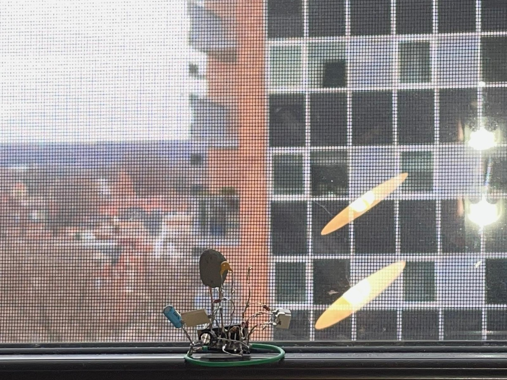
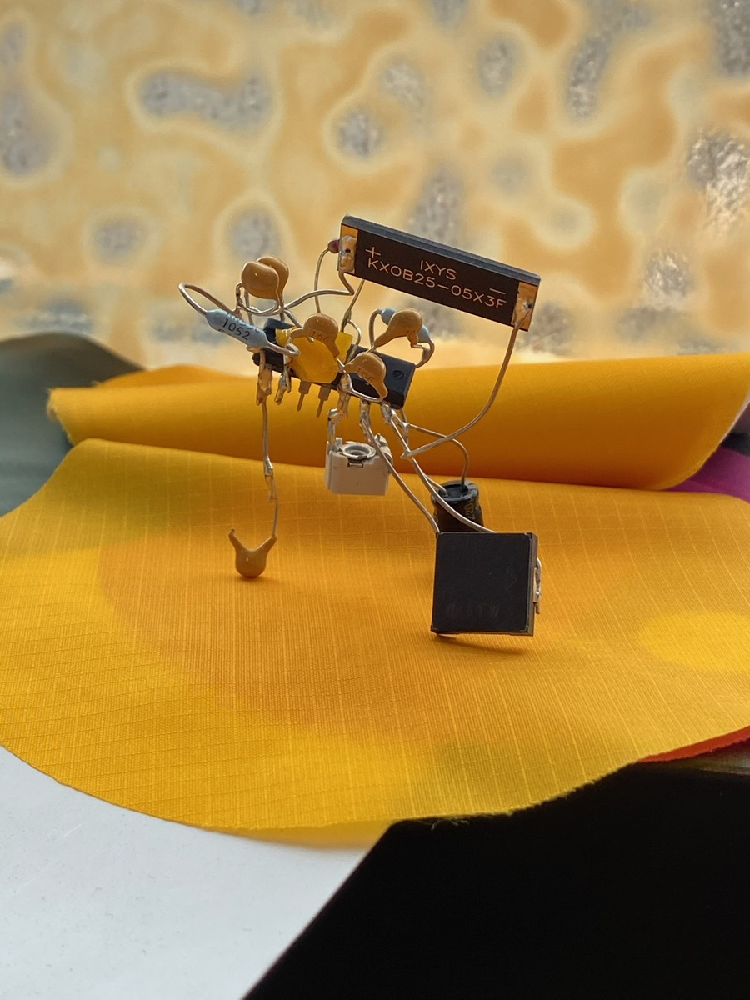
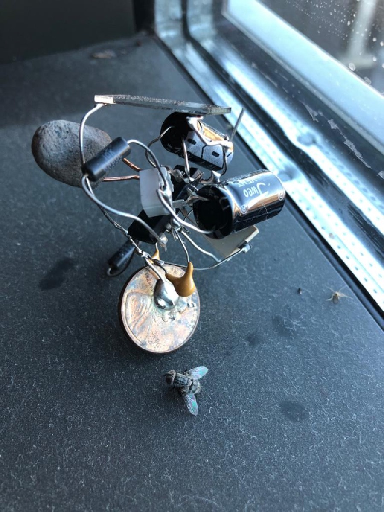

It is like that summer night that is too hot to sleep. All I hear are bugs and frogs, ringing, occupying the sound spectrum. I don’t know which night I remembered.It is that summer night, but it is also many many other nights. I only remember that night. Where all the nights are the same night.
Gathering is an installation that took place within the duration of the unification and despersing of solar electronic bugs to the hosts. This is an instance of a larger archival project called Electronic Entomology. Selected hosts are asked to host a solar electronic bug in one's private space indefinitely as long as one desires. Agreed hosts are asked to give a name to the bug and send the image of the bugs in the current location. Some of the bugs are asked to be burrowed to participate in
musical performances 1, installations 1, 2, and various reunions to come in the future.


 installation view ^
installation view ^
This particular group of 26 bugs belongs to a group called receptacle and was dispersed in New Haven in November of 2020. Each bugs' body and voice was composed with the particular host in mind - appendix, avatar. Throughout the week, bugs were picked up one by one with a brief introduction. Some were mailed to remote locations followed by a phone call.
It is a living monument of relatedness.
Whether we love each other or hate each other, whether we don’t care for each other, or we continue the relationships, the group of bugs symbolizes the temporal relatedness of this group. As we all happened to be, and as we all happen to relate to each other, and as we move on with our lives, the group, grouping, collection, gathering, division, species, cohorts, all of which are temporal grouping mechanisms that have us orient each other in time and space. We are brought together here implicating and being implicated, through another bodies. It is like riding on the same airplane, walking on the same side of the street, having a child together, being in the same building, having the same last name, to like dogs more than cats, being called for jury duty, a person who has to check ethnicity question “others.”

bon ^

erma ^

lucasito ^


 receptical sample image ^
receptical sample image ^


{kind=link}
{kind=link}
{kind=link}
Avatar of personality occupying the same space. They converse peacefully and aggressively, they cry together. Rejection and affection, theater of relationships. Surrogate and appendix. Two nemesis now face to face sit across from each other chirping away, and two that are lovers now are lovers of all others. They are all together now here only to be part again.
Each of the bugs relates to each other beyond the scope of classification and documentation that exist now, which is to be discovered as more bugs are made. I wonder where they end up in decades. Bugs, the hosts, where are they, how they have been?
Bugs may be looked as avatars at times, but that is only our concern. In a parallel, bugs chirp away on their own rhythms. Uninterested in the logic of ours. Chirps away vibrating to slightest changes of beams of photons. Relating through their body.